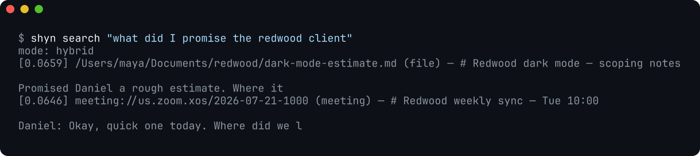
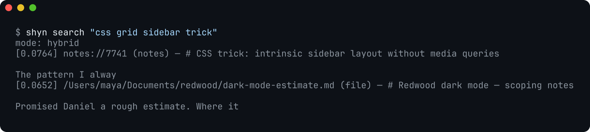

Your AI is brilliant and amnesiac. It can reason about anything except what happened to you today. Meanwhile your actual life — the article that changed your mind, the number agreed on the call, the thing you swore you'd send by Thursday — scrolls past on your Mac's screen all day and lands nowhere. By Sunday night you are asking yourself what you even did this week, and neither you nor the world's smartest software has an answer.
The tools that promised to fix this mostly asked for the same payment: your life, uploaded. Recording everything you see and sending it to someone else's computer is a trade shyn's maker wasn't willing to make — and building it locally turned out not to require the trade at all. Modern Macs can run the whole loop on-device: capture, transcribe, embed, search. So that is what shyn does.
shyn is a register of your days: everything you read, hear, and write, encrypted on your own disk, recalled by whatever AI you point at it. Nothing phones home.
What it captures
- Your screen. A featherweight agent reads the text you actually look at — articles, dashboards, code review, the Figma frame you argued about — via OCR and accessibility APIs. It skips password fields, skips apps you exclude, and pauses when you tell it to.
- Your meetings. Call detection, both sides recorded locally, transcribed on-device with Whisper into a speaker-labeled transcript. The audio is purged the moment the text lands — words in, bytes gone.
- Your trail. Chrome and Safari history and Apple Notes flow in automatically; files and PDFs when you ask (
shyn ingest).
How it recalls
Everything is chunked, embedded on-device, and indexed twice — keyword (FTS5/BM25) and semantic — inside an encrypted SQLite database keyed from your Keychain. Ask in whatever words you have left at the end of the day; hybrid search does the rest, in milliseconds, over a local socket:


Where the AI comes in
shyn speaks MCP, the open protocol every serious AI client now supports. Five tools: search_memory, recent_activity, remember, forget, memory_status. Claude Desktop and Claude Code connect in one step; anything else that speaks MCP works too — including fully local models, so your memory never has to touch a paid API at all. Your AI stops being a very smart stranger and starts answering like something that was in the room.
What it refuses to do
The features that aren't there are the point of the ones that are. shyn has no telemetry, no analytics endpoint, no crash reporter — there is no server to send anything to. It never stores what you searched for, only that a search happened. The menu bar popover shows counts, never content. shyn forget is honest deletion, by document, source, or time range. And when something breaks, shyn diagnose prints versions and error lines with zero document content, and you choose where to paste it.
Pause capture for thirty minutes, two hours, or until tomorrow. Exclude any app forever with one command. It is your register; shyn just keeps it.
Who it's for
People whose days outrun their working memory. Engineers and founders juggling nine threads, ADHD brains for whom “just write it down” has failed a hundred polite times, anyone who has ever scrolled their own browser history at midnight looking for a thing they know they read. The register fills itself, so remembering stops being a discipline and starts being infrastructure.
The fine print, as always
Pre-alpha. macOS on Apple Silicon only. Self-signed apps re-signed locally by shyn setup — Apple-notarized one-click installs are on the roadmap. Source-available under the Elastic License 2.0: read it, build it, bring it to work; just don't sell it as a service. Code at github.com/shyn-labs/shyn; how we make screenshots without exposing anyone's memory is entry no. 001.
$ brew install --cask shyn-labs/tap/shyn && shyn setupYour days already write themselves. shyn just keeps the register.